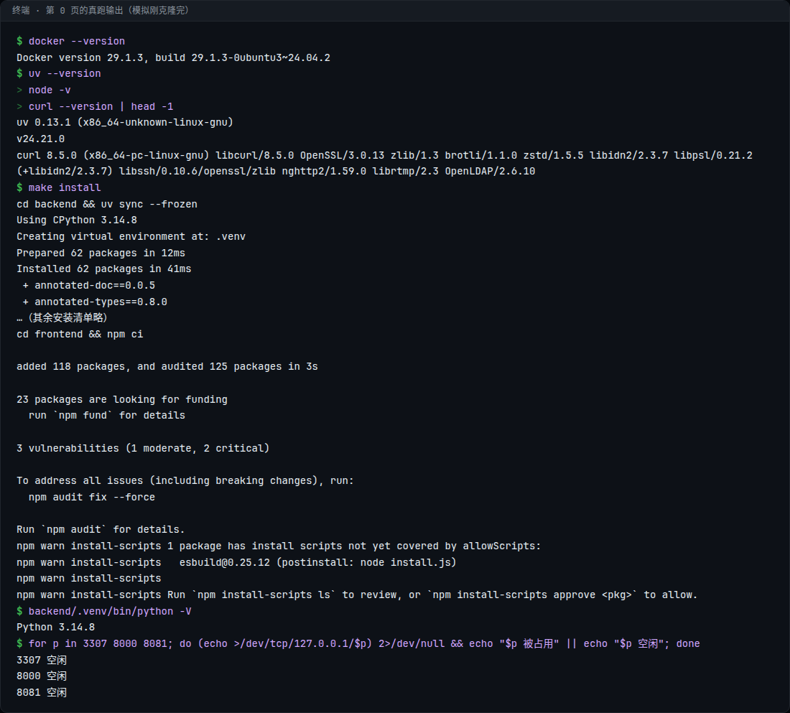

练本 · 阅读版（md 正典派生，改内容请改 manual/page-00.md）
第 0 页 · 开课前准备
城市坐标 · P0 市政配套 · 场地平整（交付物 ①）｜开工前先平场地、接水电：工具、依赖、三个端口备齐——这是全城第一件交付物，后面才有地方立楼。
全书在盖什么：先看 全书地图（一页图，10 分钟看懂整本）。
这一页构建什么
把克隆下来的仓库变成「能开始第 1 页」的状态：工具装齐、依赖装好、三个端口空着。这一页没有代码，也不讲业务概念，只补克隆后缺的东西。
提前说明
先确认起点：你已经克隆好仓库，终端停在仓库根目录（ls 能看到 Makefile、backend/、fixtures/ 的那一层）。
用 bash 敲：以下命令都在这一层敲（Windows 用 Git Bash 或 WSL；macOS 默认是 zsh，先敲一下 bash）。
安装好五样（安装方法见官方安装页）：
- Docker（https://docs.docker.com/get-docker/ ；装完要让它运行起来，口语常说“跑起来”）
- uv（https://docs.astral.sh/uv/ ）
- Node.js LTS + npm（https://nodejs.org/ ）
- GNU Make（装好就是
make命令） - curl（第 3–9 页全靠它，多数系统自带）
工具行是 6 项：make doctor 把 daemon 单列成一项（docker / daemon / uv / node / make / curl）。
可选工具（不装也能完成 L1；附录工具卡会用到；pipx 是「换项目/可选工具」的通用装法）。
先装 pipx：本课程已装 uv，推荐 uv tool install pipx（装完 pipx --version 有输出即可）。
也可以用系统 pip：python3 -m pip install --user pipx && python3 -m pipx ensurepath（有的系统 Python 不带 pip，那就用 uv 那条）。
再装三件：pipx install viztracer py-spy scalene——隔离安装到 pipx 自己的环境，不污染项目 venv。
不装 pipx 也行：用 uv tool install viztracer（uv 直接装进工具环境）。
或建临时 venv：uv venv /tmp/tools 后 uv pip install --python /tmp/tools/bin/python <包名>。
p17 另有一步：要追项目自己的 pytest 时，另按该页第 5 步装进 backend/.venv。
注意：
make doctor不查宿主机 Python——只装了uv时，它管理的解释器不在系统 PATH 上。
make docker-env会回退到uv python find，若仍报错，装 Python 3.8+ 或先uv python install。
三个被忽略的：.env、backend/.venv、frontend/node_modules 都被 .gitignore 忽略，克隆下来没有。
怎么补：.env 不用你建（第 1 页会从 .env.example 读），后两个由 make install 生成，别手动 pip 装。
动手
第 1 条 · 装依赖（必须在仓库根目录；第一次下载，再跑只要几秒，能重复跑）。
make install
第 2 条 · 一条命令判完环境（工具、依赖、端口三件事；末行全过才算这一页做完）。
make doctor
它做了什么：make doctor 把这一页要你分头检查的三件事（工具、依赖、端口）收成一条命令，每项打 ✓ 或 ✗，末行给总判定。
想看明细：敲 make doctor-v（-v 会被 make 吃掉，所以是 doctor-v），看它到底查了什么、拿什么当判据。
你应该看到
第 1 条最长，真跑输出是（中间 62 行 + 包名==版本 太长，只留两行）：
cd backend && uv sync --frozen
Using CPython 3.14.8
Creating virtual environment at: .venv
Prepared 62 packages in 12ms
Installed 62 packages in 41ms
+ annotated-doc==0.0.5
+ annotated-types==0.8.0
…（其余安装清单略）
cd frontend && npm ci
added 118 packages, and audited 125 packages in 3s
第 2 条真跑输出是这四行——末行 12/12 通过 就是结论：
工具 ✓ docker 29.1.3 ✓ daemon ✓ uv 0.13.1 ✓ node v24.21.0 ✓ make 4.3 ✓ curl 8.5.0
依赖 ✓ Python 3.14.8（要求 ≥3.12） ✓ uv 62 个包全兼容 ✓ npm 依赖无缺失
端口 ✓ 3307 ✓ 8000 ✓ 8081
12/12 通过

每次不同的：版本号、包数量、耗时，看到同类的行就算对上。
✓ 变 ✗ 时不用猜：make doctor 会在下面单独列出没过的那项和修法。
提醒不是失败：尾部出现 npm warn ...、vulnerabilities 不算失败。
重跑更干净：再跑一遍 make install 会变成 Checked 62 packages in 0.55ms 这种一行，照样算成功。
卡住了看这里
先按提示改：make doctor 的每一项都对应一句修法。
再跑一次：改完再跑一遍 make doctor，12/12 通过 出现才算完。
✗ docker：Docker 没装，回「提前说明」装完。✗ daemon：装了但没跑起来——Docker Desktop 打开窗口；Linux 用sudo systemctl start docker。- 别被版本骗：
docker --version有输出不代表 daemon 在跑。 ✗ uv/✗ node/✗ make/✗ curl：对应工具没装，装完重开一个终端再试（老终端认不到新装的命令）。✗ Python：backend/.venv没造出来，多半是第 1 条失败了——先修make install。- 还不行就分开跑：网络问题重跑一次；再不行就分开跑
cd backend && uv sync --frozen和cd frontend && npm ci，看哪段先红。 ✗ uv 62 个包全兼容：有包装不上或互相冲突，cd backend && uv sync --frozen会打印第一段红字，照它说缺什么。✗ npm 依赖无缺失：跑cd frontend && npm ci（不要用npm install，它会改写锁文件，后面的人装出来和你不一样）。✗ 端口：ss -tlnp | grep -E ':(3307|8000|8081) '列出占用者，把 PID 那列找出来停掉。- 看不到 PID：说明是 root 的进程（比如系统自带的 MySQL），加
sudo再看：sudo ss -tlnp | grep -E ':(3307|8000|8081) '。 - 改端口要连带改：第 1 页写死 3307、第 3 页写死 8000、第 9 页写死 8081，改端口要连带改后面命令。
- 拿到 PID 后停掉它：
kill -15 <PID>（先发 SIGTERM 让它自己收尾）；还不退再kill -9 <PID>。 - 第 1 条
uv sync卡在下载 Python：机器上没有 3.12+ 时 uv 会联网拉解释器，网络受限就会卡。 - 先看本机：
uv python list看本机有没有可用的 3.12+。
你现在拥有：一台装齐 Docker、uv、Node、curl，依赖也装好、3307/8000/8081 三个端口都空着的开发机；它是后面九页每个容器、每项服务的地基。
自己改一下
把 8000 占住，再跑一次 make doctor，看它怎么报错（这就是"判据可被第三方复核"的意思——不用作者在场，输出自己会说话）：
backend/.venv/bin/python -m http.server 8000 &
make doctor
kill %1
你应该看到端口那行变成 ✗ 8000，下面多出一条修法提示，末行从 12/12 通过 变成 11/12 通过（1 项没过）。
做完记得把后台进程停掉。
（顺带解释：make doctor 的端口检查里，3307 是刻意选的——本机自带的 MySQL 常占着 3306，所以第 1 页用 3307。）
重来一遍（回到起点）
一轮做完会留下 lab-mysql、lab-nginx 两个容器、仓库根目录的 lab/、终端 1 里的 uvicorn；先按 Ctrl+C 停终端 1。
再敲（别用 docker system prune——会误删本机别的栈）：
docker rm -f lab-nginx lab-mysql # 数据随容器消失；重跑第 1 页起容器、再跑第 2 页重新导入 fixtures/dw.sql
rm -rf lab
docker ps -a --format '{{.Names}}' | grep '^lab-' || echo "容器干净" # 验证 1
ss -tln | grep -E ':(3307|8000|8081) ' || echo "端口全空" # 验证 2
你应该看到最后两条的真实输出：容器干净、端口全空；docker rm 会先打印 lab-nginx、lab-mysql 两个名字。
| 想回到 | 删掉 | 保留 |
|---|---|---|
| 第 3 页 | lab-nginx、整个 lab/ |
lab-mysql（数据不用重新导入） |
| 第 7 页 | lab-nginx，并把 lab/app.py 退回第 6 页的版本（重抄第 6 页代码；或先 scripts/lab save 再 reset——第 10 页起介绍） |
lab-mysql、lab/ |
| 只重第 9 页 | 只删 lab-nginx |
lab-mysql、lab/（配置和页面直接重用） |